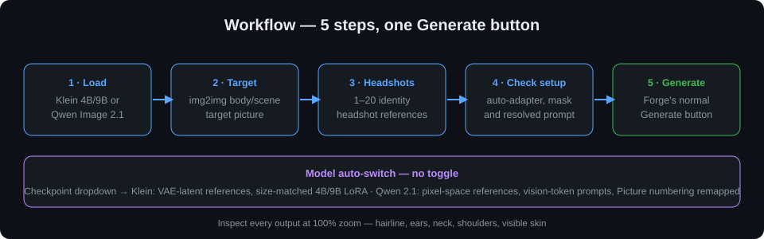
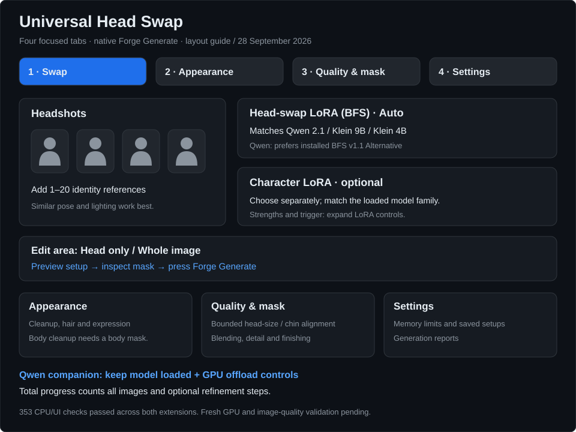

Auto model switching
Select Klein, Qwen 2.1, Krea2 or Z-Image in Forge. The extension chooses the matching route and LoRA family automatically.
Krea2 + BFS v1.1
Uses the native Forge Krea2 engine, source first and headshot second. Auto selects bfs_head_swap_v1.1_krea2, including subfolders, without confusing FLUX.1 Krea Dev.
BFS head swap
Use the original picture as the body/scene reference and a selected headshot as the identity reference, powered by Alissonerdx's BFS (Best Face Swap) LoRAs.
Protected head edit
Dedicated sampling canvas for the head region, composited back into the untouched original. Optional custom mask, feathering and crop padding.
Whole-body cleanup
Removal policies for tattoos, henna, body ink, piercings, earrings, jewelry, forehead marks and cross symbols — resolved in one deterministic prompt plan.
Proportions & sharpness
Preserve canvas aspect ratio, guide head/body scale, measured head-height correction, and detail-matched sharpening. Verify identity visually at 100% zoom.
Z-Image inpainting
Use a Z-Image character LoRA with native masked img2img. Turbo keeps CFG 1. Optional local SAM3 masks run on CPU and unload before sampling.
Forge-managed memory
Project-Invisible memory policy: device-aware probing (never assumes GPU 0), bounded reference budgets, OOM retry, RAM-backed encode cache, quantization support follows Forge's own loaders; every format has not been tested.
Zero core edits
Hook-only Forge integration via a scoped, removable bridge. Delete the extension folder and Forge is 100% stock. Every hook forwards *args/**kwargs.
How auto-switching works
| FLUX.2 Klein | Qwen Image Edit 2.1 | Krea2 | Z-Image | |
|---|---|---|---|---|
| References | Target + headshot latents | Target + headshot pixels | Source image 1 + headshot image 2 | Masked img2img |
| Adapter | Size-matched BFS | Qwen BFS | Exact BFS v1.1, model-only strength 1 | Character LoRA; no BFS |
| Starting point | Model workflow | Companion controls | Euler/Simple, 8 steps, CFG 1, denoise 1 | Turbo CFG 1 |
Protected editing, quality checks and saved setups remain available. Z-Image uses masked character-LoRA inpainting; its Turbo mode has no negative guidance.
Z-Image setup
Load Z-Image and a matching character LoRA. In Swap, open Z-Image · character LoRA inpainting, choose Turbo or Base, and keep Head only. BFS is not used; headshots are optional quality references. Setup and validation limits.
Krea2 setup
Load the native Forge Krea2 preset, keep BFS matching on Auto, use the source/body image first and headshot second, then use head_swap: replace the head with the reference head. Automatic SAM3 head masks apply to Z-Image; spot cleanup remains separate. Setup and validation limits.
How it works

Model auto-switch: pick the checkpoint in Forge's normal dropdown — the extension follows. No mode toggle exists.
Step-by-step usage
- Load Klein, Qwen Image Edit 2.1, Krea2 or Z-Image. Auto selects the matching route.
- Open img2img and upload the body/scene target picture.
- Enable Universal Head Swap in the accordion and upload 1–20 sharp identity headshots.
- Check setup — the preview shows the selected reference, edit area and the fully resolved prompt before any generation.
- Generate with Forge's normal button. Inspect Show last generation report, then check the output at 100% zoom.

Install
cd <forge>/extensions
git clone https://github.com/mishrasiddharth08/universal-head-swap
- Load a supported checkpoint; Auto matches Klein, Qwen and Krea2 BFS adapters.
- Open img2img, upload the body/scene target, enable Universal Head Swap in the accordion.
- Upload 1–20 sharp identity headshots.
- Leave the adapter on Auto (match model), denoising at the BFS start value (1.0), pick a fixed seed, click Check setup.
- Generate with Forge's normal Generate button and inspect Show last generation report.
Optional face analysis: place face_landmarker.task at scripts/models/ and install MediaPipe in Forge's own Python environment — see the full README for pinned URLs and hashes. No automatic downloads ever run.
Requirements
- Forge Neo (sd-webui-forge-classic, neo branch) with the selected engine
- Checkpoint + matching family adapter. Krea2 requires
bfs_head_swap_v1.1_krea2. - Works on NVIDIA (CUDA), AMD (ROCm) and CPU; DirectML/Vulkan not implemented. FP8 acceleration probes skipped on ROCm; portable storage fallbacks used.
Companion requirement
For Project Invisible Qwen 2.1, update both extensions and restart Forge. Older companion engines bypass Head Swap callbacks. Integration details.
Testing
python -m unittest discover -s tests -v
# CPU regression tests; actual model generation must also be checked
Krea2 integration · October 3, 2026
The native Forge Krea2 engine now receives source image first, head reference second, the exact trained trigger, and automatic BFS v1.1 selection from nested folders. FLUX.1 Krea Dev is excluded. The upstream starting point is Euler/Simple, 8 steps, CFG 1 and denoise 1; raw Krea2 suggests about 40 steps and CFG 3-4. Automated contracts passed, while GPU generation and visual quality remain pending.
Runtime update · September 26, 2026
Automatic adapter matching follows the loaded Klein 4B, Klein 9B or Qwen Image Edit model when Auto is selected. Qwen references now preserve their original colors and remain on CPU until needed. Quantization and model offloading follow Forge. Qwen INT8 ConvRot was subsequently GPU-tested with BFS, character and Turbo LoRAs; other combinations remain unverified.
Dedicated Qwen 2.1 integration
Head Swap now connects directly to the Project Invisible Qwen 2.1 engine. Automatic selection follows preset and checkpoint changes, including BFS adapters in subfolders. Your headshots form a selection pool; each output uses its target and chosen headshot. BFS, a character LoRA and Viggle Turbo were tested together on INT8 ConvRot. Protected-head mode preserves the surrounding picture, and completed files report their saved location.
Restart Forge after updating both extensions. Other quantizations and actual Klein generation still need individual GPU validation; face-match checks remain advisory.
Qwen 2.1: BFS v1.1 Alternative
Automatic matching now prefers the alternative v1.1 adapter, including subfolders, with standard v1.1 and v1 fallbacks. Manual choices, character LoRA, protected hair and cleanup controls remain available. The author's eight-step workflow also requires a separate Pruna speed adapter; BFS alone does not enable it.
152 extension tests passed. New visual quality and all quantizations still require individual validation.
Clean tabbed UI and reliability fixes
Setup now shows both BFS and character LoRA selectors. Appearance, Quality & mask, Speed & memory, Saved setups and Report keep advanced controls organized. Automatic matching binds Forge shared model controls directly. Empty mask editors now use automatic head detection. Update the separate Qwen companion for Turbo-slider and guidance fixes, then restart Forge.
130 Head Swap tests and 132 companion tests passed. The dedicated Qwen engine uses Euler; Res Multistep/Beta and every quantization have not been GPU-validated.
❤️ Special Thanks
- r/sdforall — community discussion and testing
- r/SECourses — community discussion and testing
- r/malcolmrey — community discussion and testing
- Haoming02 / sd-webui-forge-classic (neo branch) — the Forge Neo tree this extension targets
- Adeliox — Klein Head Swap — original extension (MIT), base of this build
- Alissonerdx — BFS (Best Face Swap) — workflow and LoRAs
- ComfyUI — reference for upstream sampler/scheduler coverage
- The Forge / AUTOMATIC1111 community — for the extension ecosystem this plugs into
- Project Invisible extensions — memory policy, GPU compatibility and extension philosophy
- PozzettiAndrea / ComfyUI-SAM3 and Meta SAM3 — segmentation workflow inspiration and optional mask model
- ComfyUI-DeGrid — Apache-2.0 fine-grid cleanup filter
- Google MediaPipe — face landmarker and detector models
- And everyone else in the Stable Diffusion and Forge communities whose workflows, bug reports and discussions contributed.